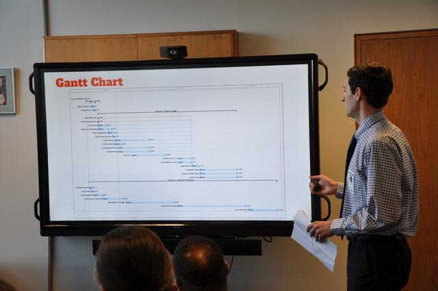

In December 2017 I graduated from NJIT with a bachelors degree in IT.
A few months later I accepted a job offer for an IT Support Analyst position at the headquarters of a retail company.
My role was a mix of helpdesk/desktop and network support. This was a great first position as I gained a lot of insight
into how IT functions for a large business with over 700 sites and thousands of employees.
Unfortuantely a year later my department was dissolved and I found myself on the job search again.
With the skills I had learned I was able to find a position as an IT Specialist at a non-profit residential treatment center.
This role has been another great learning opportunity as it is smaller in scale; 1 main campus with 3 remote sites, and 350 emplyoees.
The IT department consists of only myself and my manager so I get to see everything from start to finish.
My goal is to become a network engineer. I am currently studying for the CCNA exam and hope to acheive
it by February 2020.

I will begin by telling a little bit about myself. I am originally from Staten Island, NY, but I moved to New Jersey when I was seven and I have been here ever since. After completing high school I went to Raritan Valley Community College in Branchburg, NJ because I wasn't really sure what I wanted to do with my life. Initially I was taking classes for a respitory therapy program, then I switched to nursing, and I even thought about becoming a corrections officer. I don't remember exactly when but something just clicked in my mind and I realized I spend all day on my computer, I'm intelligent, I think logically, why don't I just go into the technology field? Afterwards I began taking IT courses eventually finishing my B.S. in IT from NJIT and I couldn't be happier with my decision.
People who know me best would describe me as shy and mellow with a good sense of humor. My hobbies include reading, watching movies, practicing piano/guitar, or playing strategy games. Overall I consider myself a pretty well-rounded individual. I enjoy light exercise like jogging and calisthenics to counter the fact that I will spend all day sitting on my computer. I also love learning about history in addition to technology.
Link 2 : A webpage hosted on heroku that uses AngularJS to loop through movie posters and track user ratings (Spring 2017) Code on GitHub
Presenting in Trenton at the Administrative Office of the Courts for my NJIT Capstone Project 
E-mail: edward.carbonaro12@gmail.com